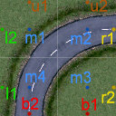
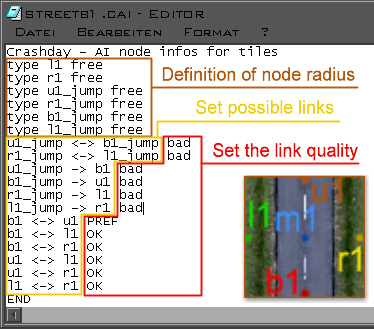

In
Crashday the AI information is specified for each track piece in
separate files called [tilename].cai. Every .cfl-file needs a related
.cai-file, otherwise the AI will never drive across your new creation.
.cai-files need to be created by hand in a text editor.
How does the AI work?
The AI in Crashday navigates based on a global net of nodes and links (the connection between nodes), spread across an track. The path finding algorithm will consider any link from one node to another
as a possible driving direction and "allows" the AI to use it when suitable. Anywhere, where no nodes or links exist, the AI will not drive. Each node does have additional
information that both pathfinding and the steering code will use and which will be explained more in detail in this section.
The "global net" of nodes and links is made up
at loading time of the track from one "local net" of each track tile (so to say a "per-tile net"). This "local net" is what we provide with the .cai file.
Setting up the AI
Below
is the general structure of the .cai-file.
|
Crashday
- AI node infos for tiles
|
first
static line
|
|
...
|
list
of AI nodes, links and their qualities
NOTE: This
list has no required sequence
|
|
END
|
last
static line
|
 The
“freely roam around” parameter in the .cfl-file is an AI
parameter as well (see Tile specification file). Set this value to “1” to allow the AI to freely roam
around on a tile without hitting anything (this will make the AI much more competitive than solely navigating by nodes and links!).
The
“freely roam around” parameter in the .cfl-file is an AI
parameter as well (see Tile specification file). Set this value to “1” to allow the AI to freely roam
around on a tile without hitting anything (this will make the AI much more competitive than solely navigating by nodes and links!).
Although you will create the AI info file using a text editor, you can always use ShowCFL to display your track piece's AI nodes and links (see ShowCFL).
You cannot freely choose the position of AI navigation nodes, but you choose from a list from predefined notes on the borders and the center of tiles. You can set links for the following (basic) nodes:

Available
AI nodes for 1x1 tiles

Available
AI nodes for 2x2 tiles
|
tile
dimensions 1x1 (20x20m)
|
|
u1
|
up1,
top entry of track piece
|
|
r1
|
right1,
right entry of track piece
|
|
b1
|
bottom1,
bottom entry of track piece
|
|
l1
|
left1,
left entry of track piece
|
|
m1
|
middle1,
center oh the tile
|
|
tile
dimensions 2x2, 1x2, 2x1 (40x40m, 20x40m, 40x20m)
|
|
u1
|
up1,
top left entry of track piece
|
|
u2
|
up2,
top right entry of track piece
|
|
r1
|
right1,
upper right entry of track piece
|
|
r2
|
right2,
lower right entry of track piece
|
|
b1
|
bottom1,
bottom right entry of track piece
|
|
b2
|
bottom2,
bottom left entry of track piece
|
|
l1
|
left1,
lower left entry of track piece
|
|
l2
|
left2,
upper left entry of track piece
|
|
m1
|
middle1,
center of the upper left section
|
|
m2
|
middle2,
center of the upper right section
|
|
m3
|
middle3,
center of the lower right section
|
|
m4
|
middle4,
center of the lower left section
|
If you feel like the ordering of the node positions doesn't make any sense to you, just read it clockwise along the tile borders (the center nodes in clockwise order as well, respectively). This is for example why on a 2x2 tile the u1 node does not lie above b2
In certain situations it might be enough to have just one level of nodes and links. Imagine a track piece where a bridge crosses a road. In this situation you want
to the AI stay on the road if it's on it, and stay on the bridge if it's on this elevated level. Moreover, you will never want to AI to "think" it can go from one level
to the other (except if it really CAN).
For this purpose, Crashday supports three more levels than only the ground level. One level to support examples like bridges ("lifted nodes"), one level to support tunnels ("sub nodes") and
one special "jump node" level to enable jumps over tile obstables/whole tiles (the "jump nodes" help with such situations as where you want the AI to pass by a wall by jumping over it using a ramp. Usually a wall has no links from one to the other side, so the AI assumes there is no direction connection to the other side. However, there can be a connection "in the air" (the jump nodes) that goes over the wall and the ramp offers a link from "ground to jump level")
These nodes work the same way like the ground level nodes and are simply identified by a postfix:
|
*_lift
(e.g. u1_lift)
|
above
ground level
|
|
*_sub
(e.g. u1_sub)
|
below
ground level
|
|
*_jump
(e.g. u1_jump)
|
jumping/flying
|
Now
you have to set links between these node points. Remember that, that as long as
no link between two nodes exists, AI assumes it cannot drive
this way. This rule also applies to two nodes from different levels, of course.
Links can be placed between any combination of two nodes.
The most obvious links you will want to set are those that define a driving direction (such as a link that follows the road on a road tile). However,
there are often many other ways how you can drive accross a tile (e.g. you could also cross a road sidewards or diagonal), even if it might not be the preferred driving path.
You might have already guessed it (or not ;)) that there's is a way to define a link's "preference", or as called in Crashday, the "link quality". It helps in all such cases
in pathfinding whenever two possible links exist and the AI has to take the most optimal one of both. There are three types of link qualities in Crashday:
|
pref
|
"preferred
link", this link will be chosen over any other non-preferred link, except the position of the target note is not completely worthless for pathfinding
(e.g. recommended for all roads - the "ideal line")
|
|
ok
|
"OK
link", no issues driving along this way but not the link that is
intended to be driven on this tile (e.g. crosswise to roads or on
plane meadows)
|
|
bad
|
bad
link, possible to drive this link but not recommended (e.g.
obstacles blocking the way)
|
Crashday offers six game modes with AI. However, in only two of these modes the AI usually drives "along the track": Race and Bomb Run. In all other modes the AI often has to chase
"dynamic targets", i.e. it cruises around the track wildly and doesn't follow a preferred path like a road: Wrecking, Pass The Bomb, Hold The Flag, Stunt. Due to this reason,
in the last four mentioned modes, the game internally resets "preferred" links to "OK" state, as no more preferred direction exists - they just have to get to their targets as fast as possible.
The AI is now driving along a path of nodes and links. So far, so good :) Obviously however, you will not want it to look like a train on rails when it's sticking closely to that path.
For this reason there is one last attribute for nodes which is the "node radius". This radius defines, how far an AI car can stay away from the position of a node and still count the node as "passed".
This allows for smoother and definitely faster driving of the AI (as a sidenote, the AI will always only approach a node as close as it has to, no further).
The default
radius for every node without having this attribute set is 5m. Below
is a list of all other possible settings:
|
very
close
|
free
radius of 1,5m around the node (e.g. small gates or entries)
|
|
close
|
free
radius of 2,5m around the node (e.g. roads enclosed with guard
rails)
|
|
loose
|
free
radius of 8m around the node (a lot of free space)
|
|
free
|
free
radius of 11m around the node (nothing to hit here, e.g. free
field tiles. Usually this radius is even bigger than the distance to the next node)
|
Let's get back to finally set up the .cai-file for our road piece example.

AI
infos in “streetb1.cai”
You will usually start with setting the node radius attributes. The nodes defining the "driving direction" of the road are “u1”
and “b1”. As this road is really wide and not enclosed by
any fences or rails, the default free radius of 5m seems appropriate and we don't need to set any radius information for "u1" and "b1".
The other two nodes “r1” and “l1” aren't enclosed
either, so we pick the attribute “free” (11m) for them. It it safe to choose such a big radius as there is nothing we could smash into when getting too far off the node position. The
jump nodes will be more explained later.
Setting
possible links is easy, too. The preferred link will of course be the one on the road's driving direction. Thus, we link “b1” to “u1” and vice versa.
As this link can be driven in both directions, the
final line will be “b1 <-> u1 pref”. Imagine the
link is only possible from “b1” to “u1” but
not vice versa. In this case the line would be “b1 -> u1 pref”.
The
remaining links are all build up the same way.
The AI only drives along links that exist. Thus, try to connect all border nodes with each other whenever possible. Beware that this task can require some effort, especially on 2x2 tiles ;)
Be
sure to have actually all border nodes connected. (where possible)
_jump-
links
“_jump”
to “_jump”-links (e.g. “u1_jump <-> b1_jump”)
are used whenever it is possible to fly or jump over something in a certain height.
“_jump”
links to links of any other level type (e.g. “u1_jump -> b1”) are used whenever
it is possible to land at this bottom-node's position while coming
from the air. The opposite way (e.g. “u1 -> b1_jump”)
is of course only possible if a ramp for jumping is available that takes you "into air".
The
free radius attributes for “_jump” nodes are working the
same way as for any other node.
All
the AI nodes including links, qualities and free radius attributes
can be viewed with ShowCFL. (see ShowCFL)